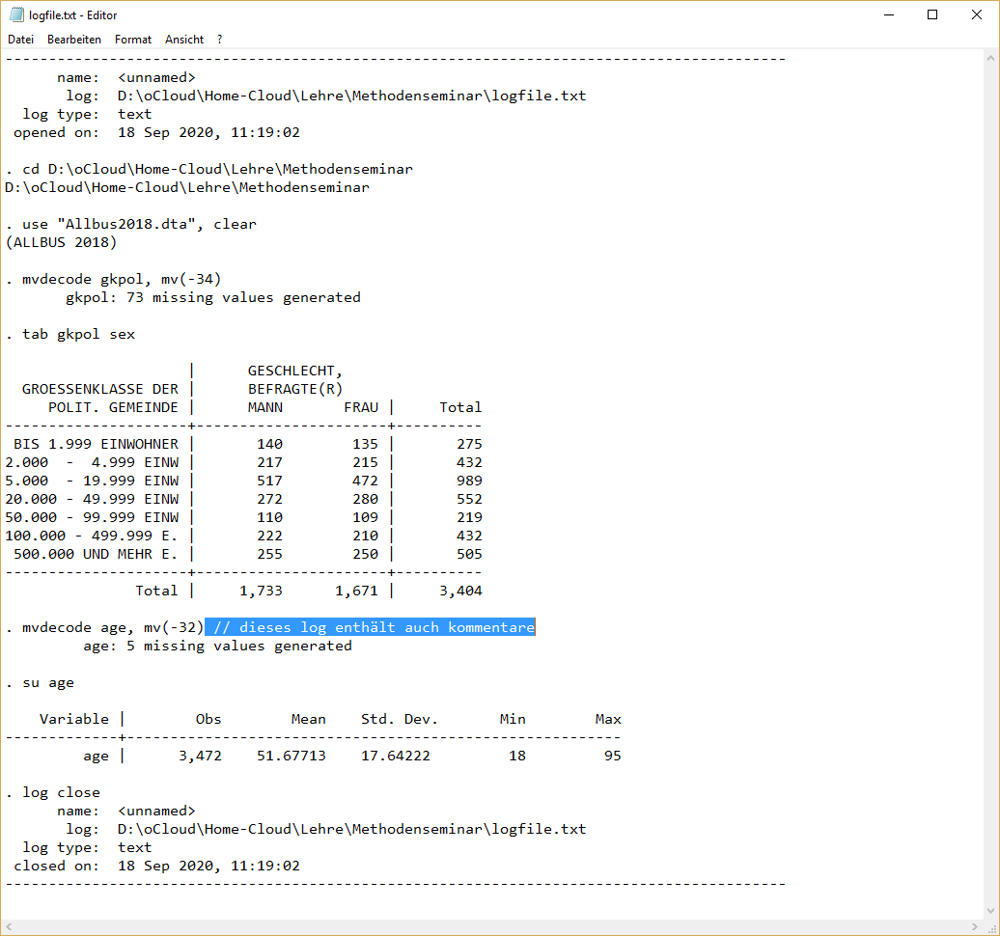
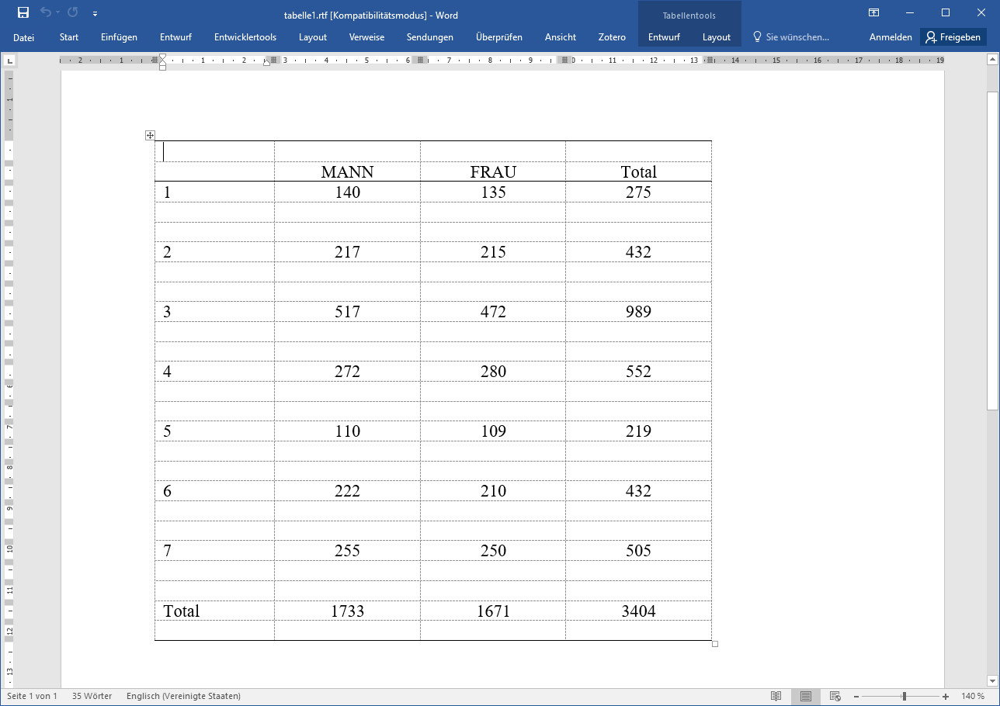
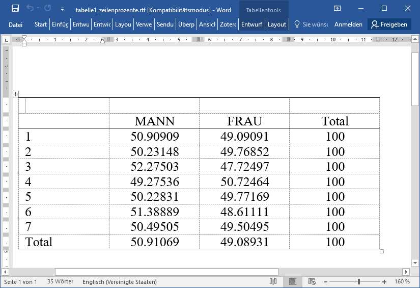
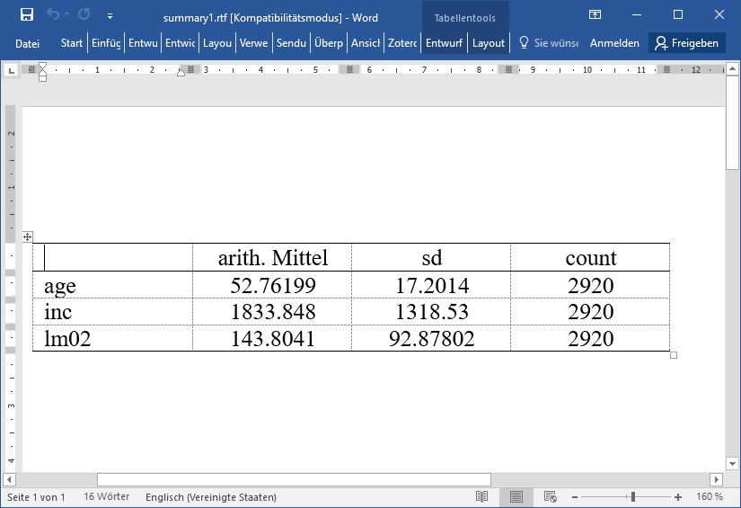
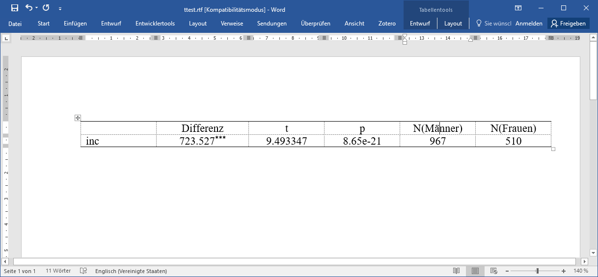

10 Ergebnisexport & weitere Tipps
10.1 log file
Mit log-Files können wir alles mitprotokollieren, was im Outputfenster passiert. Wir starten ein log-File mit log using dateiname. Ab dann wird alles in dieser Datei mitgeschrieben, was wir uns im Outputfenster anzeigen lassen:
log using "logfile.txt", text replace // mit replace wird die Datei ggf überschrieben
cd D:\oCloud\Home-Cloud\Lehre\Methodenseminar
use "Allbus2018.dta", clear
mvdecode gkpol, mv(-34)
tab gkpol sex
mvdecode age, mv(-32)
su age
log close
10.2 Tabellenexport mit esttab
esttab und estout sind von Ben Jann erstellte Funktionen, um Tabellen aus Stata zu exportieren. Hier zwei Beispiele für den Export in eine .rtf-Datei, die mit Word weiterverarbeitet werden kann. Mehr Infos und ausführliche Anleitungen hier (nach unten scrollen für Tabellen) und hier.
10.2.1 Kontingenztabellen
ssc install esttab
// Tabellen exportieren mit esttab
cd D:\oCloud\Home-Cloud\Lehre\Methodenseminar
use "Allbus2018.dta", clear
mvdecode gkpol, mv(-34)
tab gkpol sexssc install esttab
// Tabellen exportieren mit esttab
cd D:\oCloud\Home-Cloud\Lehre\Methodenseminar
use "Allbus2018.dta", clear
mvdecode gkpol, mv(-34)
tab gkpol sex | GESCHLECHT,
GROESSENKLASSE DER | BEFRAGTE(R)
POLIT. GEMEINDE | MANN FRAU | Total
---------------------+----------------------+----------
BIS 1.999 EINWOHNER | 140 135 | 275
2.000 - 4.999 EINW | 217 215 | 432
5.000 - 19.999 EINW | 517 472 | 989
20.000 - 49.999 EINW | 272 280 | 552
50.000 - 99.999 EINW | 110 109 | 219
100.000 - 499.999 E. | 222 210 | 432
---------------------+----------------------+----------
Total | 1,733 1,671 | 3,404 Zunächst müssen wir mit estpost die Tabelle ablegen und mit eststo unter einem Namen ablegen:
Mit esttab können wir die Tabelle wieder aufrufen und mit unstack noobs nonumbers nonotes Unnötiges ausblenden:
MANN FRAU Total
------------------------------------------------------------
1 140 135 275
2 217 215 432
3 517 472 989
4 272 280 552
5 110 109 219
6 222 210 432
7 255 250 505
Total 1733 1671 3404
------------------------------------------------------------Mit using dateiname.rtf können wir die Tabelle ablegen (ggf. mit cd den Speicherort vorher wählen)
esttab tabelle1, unstack noobs nonumbers nonotes
cd "...."
esttab tabelle1 using tabelle1.rtf, unstack noobs nonumbers replace
Zellen-, Spalten- oder Zeilenprozente nicht in tab angeben, sondern erst in esttab:
esttab tabelle1, cell(pct) unstack noobs nonumbers nonotes // -> Zellenprozente
esttab tabelle1, cell(colpct) unstack noobs nonumbers nonotes // Spaltenprozt
esttab tabelle1, cell(rowpct) unstack noobs nonumbers nonotes // Zeilenprozt
esttab tabelle1, cell(rowpct) unstack noobs nonumbers nonotes collabels(none) label // kein "rowpct" in den SpaltenAbschließendes Beispiel:
esttab tabelle1 using tabelle1_zeilenprozente.rtf, cell(rowpct) unstack noobs nonumbers nonotes collabels(none) replace 
10.2.2 tabstat
cd D:\oCloud\Home-Cloud\Lehre\Methodenseminar
use "Allbus2018.dta", clear
mvdecode age inc lm02, mv(-50/-1)
tabstat age inc lm02, s(mean sd p50 count) stats | age inc lm02
---------+------------------------------
mean | 51.67713 1825.886 142.9991
sd | 17.64222 1320.984 92.18171
p50 | 53 1500 120
N | 3472 3092 3284
----------------------------------------Auch hier bereiten wir mit estpost den Output vor und speichern ihn mit eststo als “tabstat1” ab:
estpost tabstat age inc lm02, statistics(mean sd p50 count) listwise columns(statistics)
eststo tabstat1Mit esttab können wir die Tabelle dann in Stata wieder anzeigen lassen:
(1)
mean/sd
-------------------------
age 52.76199
inc 1833.848
lm02 143.8041
-------------------------
N 2920
------------------------- (1)
mean p50 sd count
----------------------------------------------------------------
age 52.76199 53 17.2014 2920
inc 1833.848 1500 1318.53 2920
lm02 143.8041 120 92.87802 2920
----------------------------------------------------------------
N 2920
----------------------------------------------------------------Mit label() können wir auch noch Titel angeben:
arith. Mit~l sd count
---------------------------------------------------
age 52.76199 17.2014 2920
inc 1833.848 1318.53 2920
lm02 143.8041 92.87802 2920
---------------------------------------------------Auch hier können wir mit using xxx.rtf dann wieder ein Word-Dokument erstellen:
esttab tabstat1 using summary1.rtf, cells("mean(label(arith. Mittel)) sd count") noobs nonumber nomtitle replace
10.2.3 t-test
cd D:\oCloud\Home-Cloud\Lehre\Methodenseminar\ // wo liegt der Datensatz?
use "Allbus2018.dta",clear
keep if work == 1 & inc > 0
ttest inc, by(sex)
estpost ttest inc, by(sex)
est store ttest1
esttab ttest1 using ttest.rtf, nonumber nomtitle noobs ///
cells("b(label(Differenz) star) t p N_1(label(N(Männer))) N_2(label(N(Frauen)))") nonumber replace